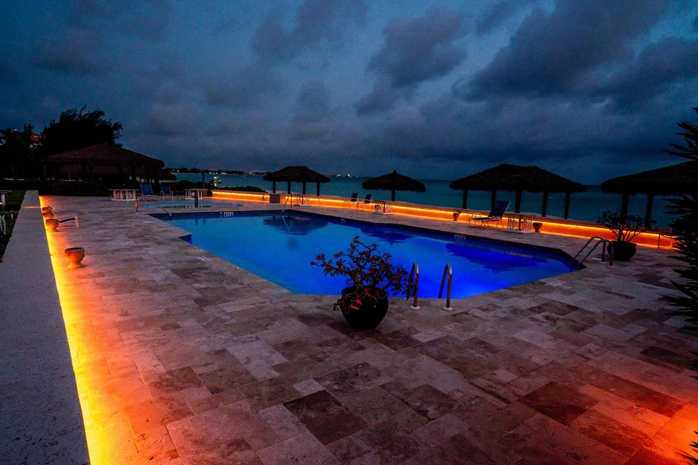
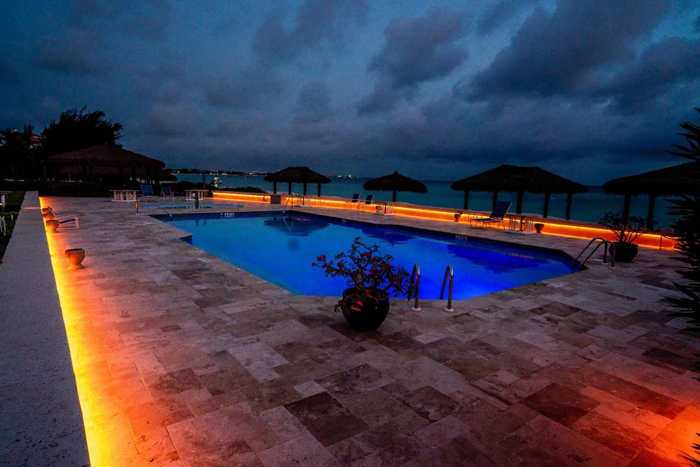
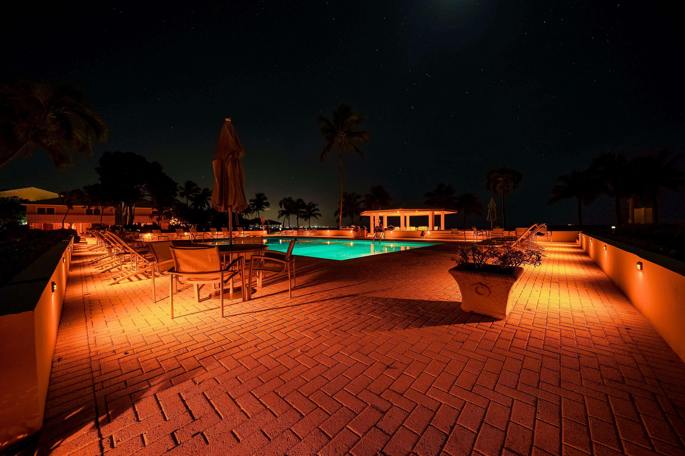
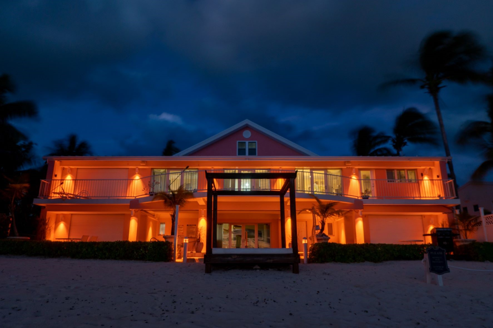
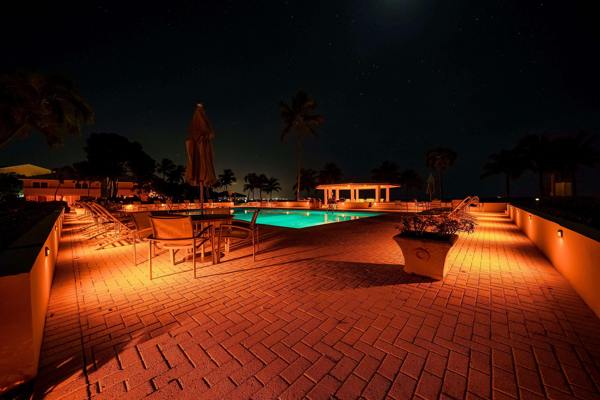
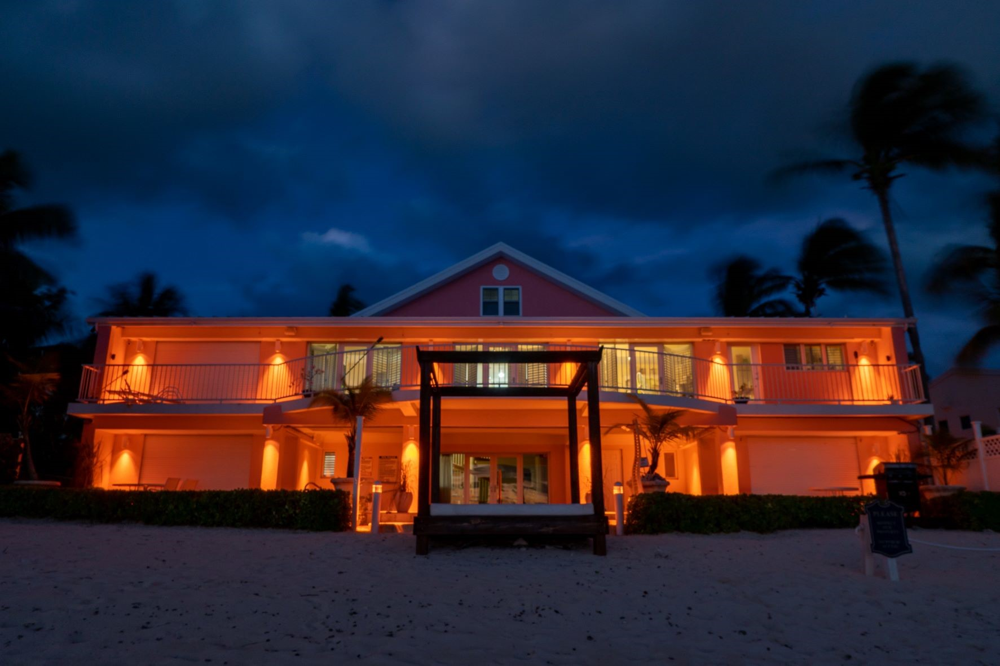

Implementing Turtle Friendly Lighting in the Cayman Islands
Background
The greatest threat that sea turtles face in the Cayman Islands today is artificial lighting. Artificial lighting can deter nesting sea turtles from coming onto shore and misorient nesting and hatchling sea turtles away from the sea, resulting in their harm and/or death. Nesting and hatchling sea turtles use the brightest light in the sky to orient themselves towards the sea. In the natural environment, this would be light from the moon and/or the stars reflecting on the ocean surface, but when artificial lights on land are brighter, nesting and hatchling sea turtles become misoriented and crawl away from the sea resulting in their injury, exhaustion and often death. Turtle friendly lighting is a proven solution to combatting misorientations as they use longer wavelength to produce an amber colour that sea turtles are less sensitive to. As seen in the diagram below, since the beginning of the turtle friendly lighting programme in 2017 the Department of Environment (DoE) has implemented turtle friendly lighting on coastal developments in the following ways:
1. Directing and recommending conditions of approval for new developments on turtle nesting beaches.
2. Retrofitting existing properties on the designated and proposed Critical Habitats for Sea Turtles.
3. Providing advice and suggestions to properties that are not eligible for funding but want to voluntarily swap to turtle friendly lighting.
Results
As seen in the diagram below, there are currently 19 turtle friendly properties in the Cayman Islands, 4 of which are turtle friendly without intervention from the DoE due to the size of the development, setback from the water, on-site vegetation, etc. There are 15 properties that have installed turtle friendly lighting and remain turtle friendly to this day. The DoE is optimistic about the future of turtle friendly lighting in the Cayman Islands as there are currently 54 developments scheduled to install. The DoE greatly appreciates the participation from property owners on turtle nesting beaches as your efforts are pivotal to the conservation of sea turtles. Some of Cayman's turtle friendly properties can be seen below.
 

 


